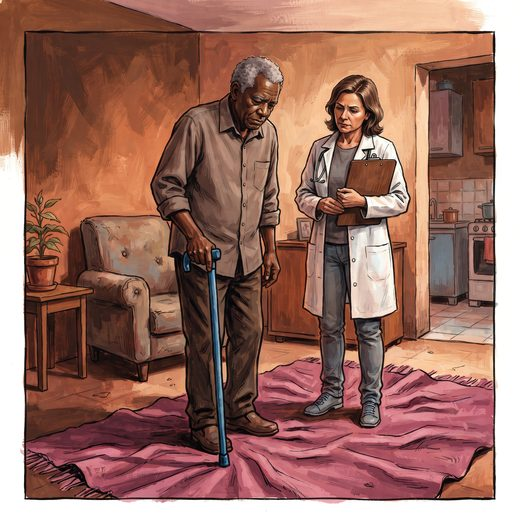

Consulta rápida à beira do leito
Condutas, doses e interações.
Referências da aula · 13
- Van Gelder IC, Rienstra M, Bunting KV, et al. 2024 ESC Guidelines for the management of atrial fibrillation developed in collaboration with the European Association for Cardio-Thoracic Surgery (EACTS). Eur Heart J. 2024;45(36):3314-414.
- Garnett A, Sangrar R, Oleynikov C, Gerstle D, Connelly D. Structural marginalization of older adults within health care settings: a concept analysis. BMC Geriatr. 2025;26(1):113. PMID 41437222. doi:10.1186/s12877-025-06572-7. — atributo definidor: “o cuidado é reduzido ou comprometido”.PubMedDOI
- Sociedade Brasileira de Imunizações (SBIm). Calendário de Vacinação SBIm — Idoso (60 anos ou mais), edição vigente. Ministério da Saúde. Programa Nacional de Imunizações (PNI).
- Quek HW, Reus Perello X, Lee K, et al. Deprescribing in older people: a clinical practice guideline summary. Med J Aust. 2026;224(4):e70174.
- O’Mahony D, Cherubini A, Guiteras AR, et al. STOPP/START criteria for potentially inappropriate prescribing in older people: version 3. Eur Geriatr Med. 2023;14(4):625-32.
- 2023 American Geriatrics Society Beers Criteria® Update Expert Panel. American Geriatrics Society 2023 updated AGS Beers Criteria® for potentially inappropriate medication use in older adults. J Am Geriatr Soc. 2023;71(7):2052-81.
- Whitebook. Osteoporose. PEBMED; acesso em outubro de 2026.
- Whitebook. AVE isquêmico. PEBMED; acesso em outubro de 2026.
- World Health Organization. Global report on ageism. Geneva: WHO; 2021.
- Chang ES, Kannoth S, Levy S, Wang SY, Lee JE, Levy BR. Global reach of ageism on older persons’ health: a systematic review. PLoS One. 2020;15(1):e0220857.
- Freitas EV, Py L, organizadores. Tratado de Geriatria e Gerontologia. 5ª ed. Rio de Janeiro: Guanabara Koogan; 2022.
- Man-Son-Hing M, Nichol G, Lau A, Laupacis A. Choosing antithrombotic therapy for elderly patients with atrial fibrillation who are at risk for falls. Arch Intern Med. 1999;159(7):677-85.
- Linhares Junior JD. Casos clínicos ilustrativos construídos para as aulas, a partir da prática clínica geriátrica. In: Pós-graduação em Geriatria 2.0. Afya; 2026.
Documentos oficiais
Leis e publicações do Ministério da Saúde sobre o cuidado da pessoa idosa, de acesso livre.
Abrir os documentos